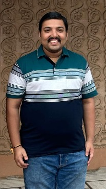

Senior AI Scientist
GE HealthCare
Bengaluru, India
|
Senior AI Scientist GE HealthCare Bengaluru, India |
|
| Google Scholar | |
I am a Senior AI Scientist at GE HealthCare, working at the intersection of artificial intelligence, computer vision, and healthcare. I received my Ph.D. from the Amarnath and Shashi Khosla School of Information Technology at IIT Delhi, where I worked under the supervision of Prof. Chetan Arora and Prof. Prem Kumar Kalra.
My doctoral research focused on automatic evaluation of microscopic and endoscopic minimally invasive neurosurgical skills. My work combines computer vision, deep learning, video understanding, and medical AI to develop systems for surgical skill assessment and intelligent neurosurgical training.
During my doctoral research, I developed datasets and AI methodologies for microsuturing, microdrilling, neuroendoscopic skill assessment, temporal action segmentation, and surgical instrument instance segmentation. My research has resulted in 25+ publications in international conferences and journals, including venues such as MICCAI, ICIP, WACV and other reputed forums in computer vision and medical AI.
I was also the chief inventor of NeuroMentor, an AI-based neurosurgical skills evaluation and training system. The system received the Modi Prix Galien India Award for Best Academic/Public Sector Innovation. NeuroMentor has been used for neurosurgical training and simulation at AIIMS, New Delhi.
I have authored and co-authored 25+ research publications spanning computer vision, medical image analysis, surgical video understanding, and AI-based surgical skill assessment.
View complete publication list on Google Scholar
Senior AI Scientist
GE HealthCare
Bengaluru, India
© 2026 Rohan Raju Dhanakshirur. All rights reserved.